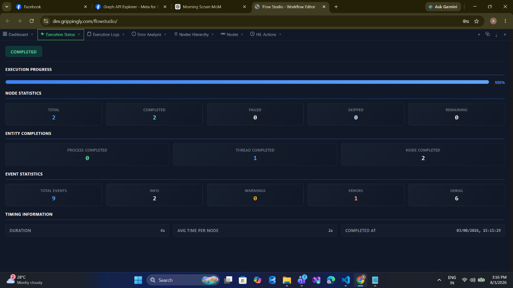
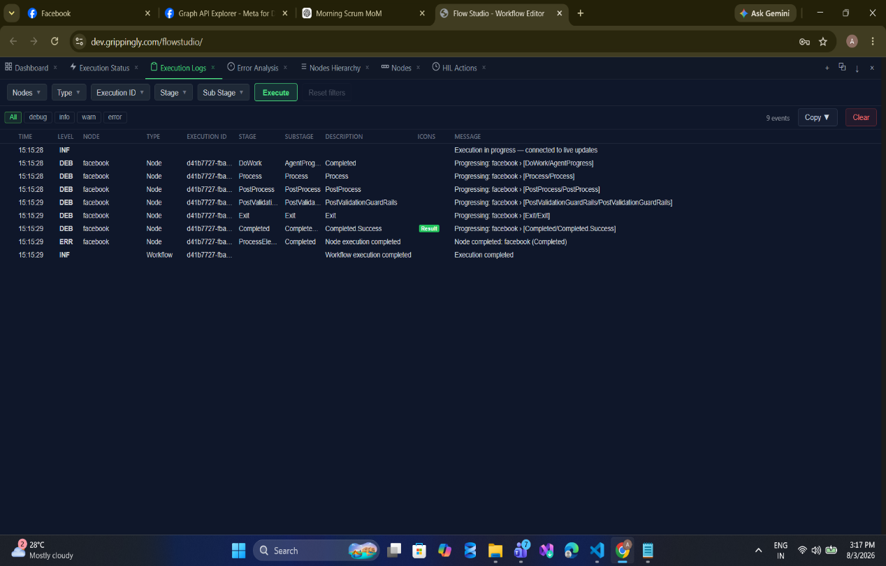
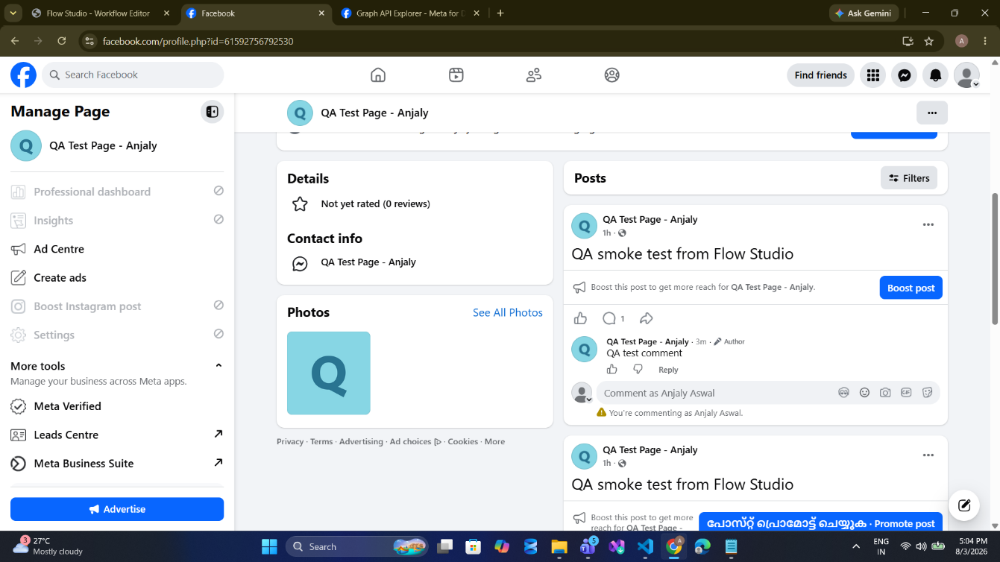

page/post
Publish a post to a Facebook Page feed, optionally attaching a link, a picture URL, and a caption. Returns the new post ID.
POST /{pageId}/feed · Permissions: pages_manage_posts + pages_read_engagement · Field reference: Page Operations
When to Use
- Scheduled content. A Scheduled Trigger fires at the planned time and this node publishes the prepared copy.
- Announcement fan-out. A product release or incident update reaches the Page at the same moment it reaches other channels.
- Approval-gated publishing. An Approval node holds the draft until a reviewer signs off, then this node publishes it.
- Link sharing. Publish a message with an attached
linkso Facebook renders the link preview card. - Start of a chain. The returned
postIdfeeds post/comment, post/getComments, and post/update.
Walkthrough
1Place and connect the node
Drag Post to Facebook Page from the Social section of the palette onto the process thread, and connect an upstream trigger's output to its Main input. The node exposes a Success and an Error port on the right.

2Configure the node
Open the node and stay on the Configuration tab. The breadcrumb above the fields reads page / post, confirming the resource and operation this form writes.

BEARER_TOKEN and select it on the Credentials tab. A stored credential always overrides an inline token, so the raw secret never has to sit in the workflow definition. See Authentication.
3Run and confirm
Click New Execution. The Execution Status panel reports the run.


facebook node to isolate its entries.4Verify on the Page

Configuration
Connection
| Field | Required | Description |
|---|---|---|
pageAccessToken | Required | Facebook Page access token. Supplied by a stored credential or inline. A stored credential wins when both are present. |
pageId | Required | Numeric Page ID, at most 50 characters. Obtain it from GET /me/accounts. |
Operation
| Field | Required | Description |
|---|---|---|
resource | Required | Must be page. |
operation | Required | Must be post. |
message | Required | Post body text. Maximum 63,206 characters. |
link | Optional | Absolute URL to attach. Facebook renders a preview card. Must be a well-formed absolute URI when present. |
picture | Optional | Image URL to attach to the post. To publish a photo as its own post, use media/uploadImage instead. |
caption | Optional | Caption for the attached image. Maximum 1,024 characters. |
link, picture, or caption to nothing at all before serialising. This is deliberate: Facebook rejects a post carrying an empty picture with (#100) Only owners of the URL have the ability to specify the picture, even though the field is logically absent.
Sample Configuration
{
"resource": "page",
"operation": "post",
"credentialID": 4021,
"pageId": "1153558217851822",
"message": "QA smoke test from Flow Studio"
}With a link preview and an expression pulling the copy from an upstream node:
{
"resource": "page",
"operation": "post",
"credentialID": 4021,
"pageId": "{{ $env.FB_PAGE_ID }}",
"message": "{{ $output.draftCopy.items[0].body }}",
"link": "https://yourbrand.com/blog/spring-release"
}Output
Success Port
| Field | Type | Description |
|---|---|---|
status | string | "success" |
resource / operation | string | "page" / "post" |
items[0].postId | string | New post ID, in Facebook's {pageId}_{postId} form. Feed this to comment, update, and get-comments operations. |
items[0].createdTime | string | ISO-8601 timestamp. Generated by the node when the call succeeded — not Facebook's recorded publish time. |
{
"status": "success",
"resource": "page",
"operation": "post",
"items": [
{
"postId": "1153558217851822_122099306859425226",
"createdTime": "2026-08-03T15:20:05.2179393Z"
}
]
}Error Port
Failures route to the error port carrying one of the FACEBOOK_* codes. See Troubleshooting for the full list.
Validation
These checks run before any request reaches Facebook. If one fires, nothing was published.
| Message | Cause |
|---|---|
pageAccessToken is required... | Neither a stored credential nor an inline token was supplied. |
Invalid access token | Token is blank or shorter than 100 characters. Emitted as FACEBOOK_AUTH_ERROR. |
Invalid page ID | pageId is blank or longer than 50 characters. |
Message exceeds maximum length of 63206 | Post body too long, or blank. |
Invalid link URL | link was supplied but is not a well-formed absolute URI. |
Caption exceeds maximum length of 1024 | Caption too long. |
Notes and Cautions
- Publishing is public and immediate. There is no draft or scheduled-publish option on this operation. Facebook's own scheduling is not exposed — schedule the workflow instead.
- Not idempotent. Running the node twice publishes two posts. If a run times out, check the Page before re-running: the automatic retry on 429 and 5xx re-sends the request body, so a call that appeared to fail may have succeeded.
- Whitespace is trimmed silently. A trailing space on
pageIdis removed rather than rejected. - Editing after the fact is limited to the message text via post/update. Link, picture, and caption cannot be changed once published.
Related
- media/uploadImage — publish a photo as its own post rather than attaching one
- post/update — edit this post's message later
- post/getComments — read what people reply
- Examples — complete publish-and-monitor workflows